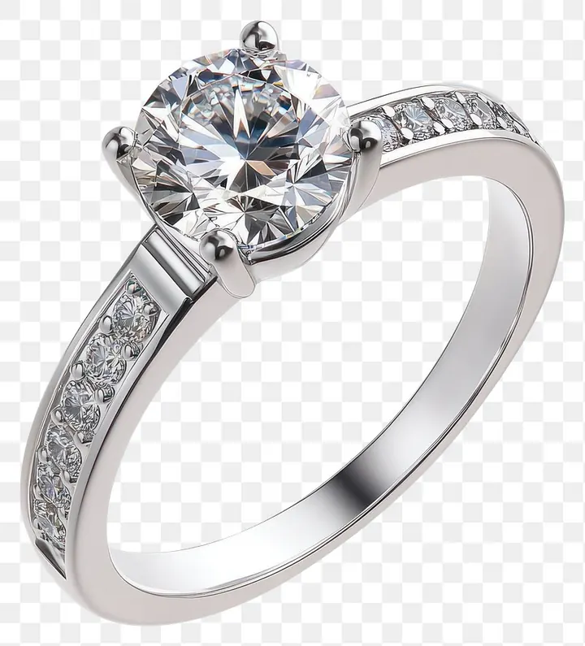

切工、亮光與火光：為什麼切工是 4C 之王
鑽石的光不是天生的，是切出來的——一顆切工普通的鑽石，再白再大也只是塊發亮的石頭。

核心定義
在 4C 裡，切工（cut）是唯一由人類雙手決定的維度——克拉、顏色、淨度都是天生條件，唯有切工是工匠的藝術。GIA 對切工的定義包含三件事：比例（proportions）、對稱（symmetry）與拋光（polish），它們共同決定鑽石把光線「用得多好」。
一顆鑽石的「光」其實是三種現象的組合：亮光（brilliance）是白光從檯面反射回來的亮度；火光（fire）是白光被拆成彩虹色散後的色閃；閃光（scintillation）是移動時明暗與光斑的跳動。切工好的鑽石三種兼備，切工差的則黯淡、漏光或死板。
特徵與分類
最經典的圓明亮式（round brilliant）有 57～58 個刻面：冠部（crown）33 面、亭部（pavilion）24 或 25 面（多一面是腰圍下的小尖底 cutlet）。關鍵比例參數包括檯面百分比（table，通常 53～60%）、冠角（crown angle，約 34°）、亭角（pavilion angle，約 40.7°），以及腰圍厚度。
| 參數 | 理想範圍（約略） | 影響 |
|---|---|---|
| 檯面百分比 | 53–60% | 太大小光，太小悶暗 |
| 冠角 | 33–35° | 影響亮光分布 |
| 亭角 | 40.6–41.0° | 過淺漏光、過深顯黑 |
| 腰圍厚度 | 薄–略厚 | 太薄易損、太厚浪費重量 |
科學原理
切工背後的物理是「全內反射」。光從空氣進入鑽石後，在內部遇到鑽石/空氣介面時，只要入射角大於臨界角（鑽石約 24.5°，是天然寶石中極小的數字），光線就會全部反射回內部而不穿出去。工匠把亭部角度調到剛好讓光在內部彈跳幾次後，從檯面整束射出——這就是「火光四射」的物理機制。
這個最佳比例不是經驗之談，而是數學：1919 年，比利時數學家 Marcel Tolkowsky 用幾何光學計算出圓明亮式的最佳比例，奠定了現代切工理論。之後 GIA 把「切工分級」標準化為 Excellent／Very Good／Good／Fair／Poor 五級。
鑑定與鑑別方法
- 看證書的 Cut、Symmetry、Polish 三欄（圓形鑽）
- 檢查檯面百分比與冠亭角度是否落在理想區間
- 從側面看腰圍是否過厚（「露底」現象）
- 用黑底觀察：切工好的鑽石亮面集中、暗區對稱
- 注意：花式切割（公主方、祖母綠形等）沒有 GIA 的切工分級，只能看比例與拋光
市場行情與保養建議
市場上，切工是 4C 中性價比最「兩極」的項目：一顆切工 Excellent 與一顆 Good 的同克拉鑽石，價格可差 20～30%，但視覺差異遠大於這個數字——切工差的鑽石看起來又小又暗，等於花大錢買了塊悶石頭。
預算分配建議：先把預算押在切工上（至少 Very Good 以上），再談顏色與淨度。這是所有珠寶顧問共通的鐵律，因為它是唯一能用眼睛直接驗證「值不值」的維度。
常見誤區
八心八箭是某些廠商的行銷名詞，指的是特定觀景器下心與箭的圖樣，GIA 從不以它分級。許多 Good 等級的鑽石也能看到八心八箭，而 Excellent 切工也不保證八心八箭——它是浪漫包裝，不是科學標準。
鑽石的閃可能來自強烈光源、螢光甚至鏡面效果。真正的切工好壞要在標準光源下看亮光分布與暗區對稱，而不是在百貨公司射燈下看誰「亮瞎眼」。武市與射燈都是行家避開的場合。
冷知識
鑽石折射率 2.417，光速約為真空的 41%。也因為這個極高的折射率，鑽石才那麼容易把光「鎖」在身體裡反覆反射——這是其他寶石望塵莫及的。
Tolkowsky 在 1919 年發表《Diamond Design》時年僅 24 歲。他用幾何光學推導的理想比例，至今仍是圓明亮式切工的重要參考。
反直覺觀點
重量再大，光線用不好就是悶。一顆切工 Fair 的 1 克拉可能又暗又小，而一顆切工 Excellent 的 0.8 克拉明亮靈動——用眼睛驗收，而不是用克拉數自我說服。
在 4C 中，切工是「花同樣原料、不同手藝」的結果，差價完全來自人為，也因此成為評估工匠價值與性價比最透明的鏡子。